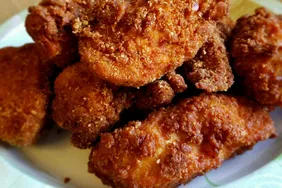

Fried chicken

Pieces of fried chicken in a plate
A well cooked chicken on a plate with all it's flavour
This type of cooking chicken is very common among chefs
It is tender and very crispy
The ingredients of a well cooked chicken
- Chicken
- Flour
-
- Eggs
-
- Milk
- Buttermilk
- Whole Milk
- Yogurt
-
- Oil
- Corn oil
- Coconut oil
- Olive oil
- Peanut oil
-
- Spices
- Black papper
- Cinnemon
- Cumin
- Paprika
Step by step guides
-
- First step:
-
Combine the flour, paprika, salt, and pepper in a zip-top bag.
Seal the bag and shake until well-combined.
-
- Second step:
-
Pour buttermilk into a shallow bowl,
then dip the chicken (on both sides) until it's completely soaked in buttermilk.
Place the soaked chicken in the bag with flour mixture, seal, and shake well to coat. Transfer the coated chicken to a baking sheet, and cover.
Allow the flour coating to become a paste-like consistency.
-
- third step:
-
Pour the oil in a skillet and bring it to high heat.
Brown the chicken on both sides, then reduce the heat, cover the skillet, and cook for about 30 minutes. Remove the cover, return the heat to high, and fry until extra crispy.
Drain the chicken on paper towels.